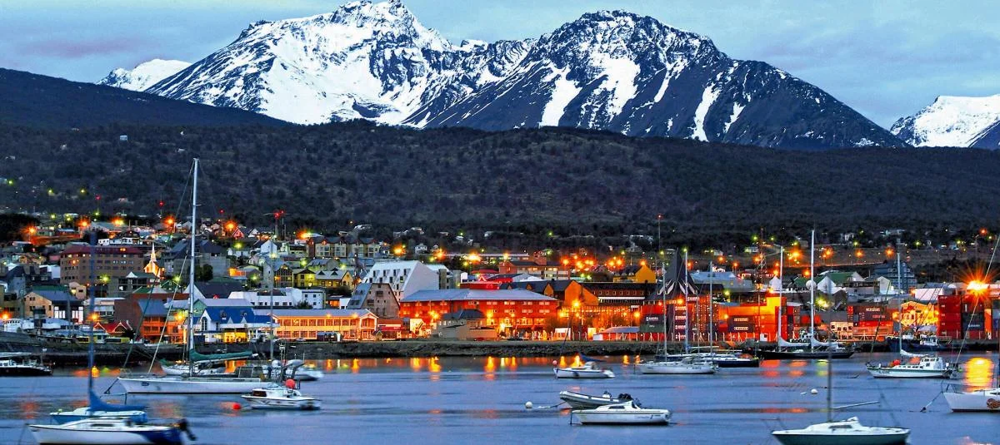
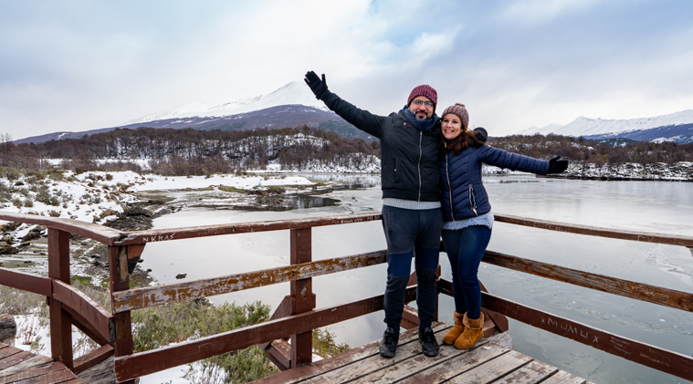
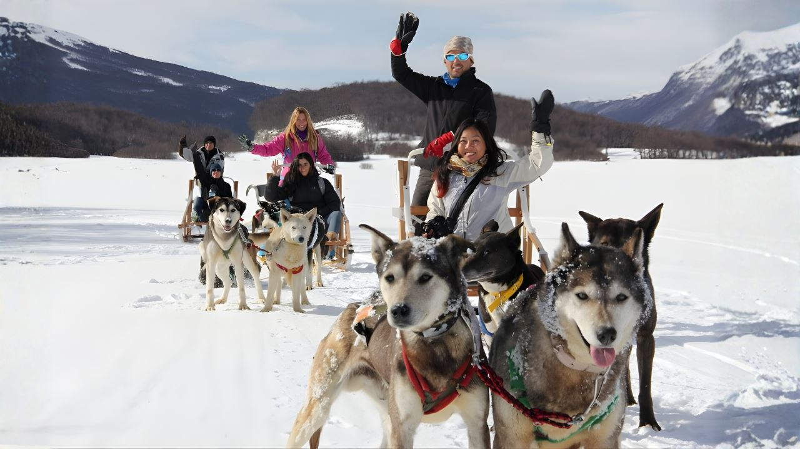
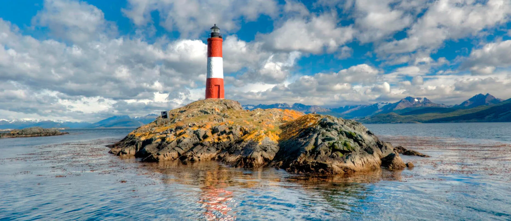

Sur Global, principio de todo.

A orillas del Canal Beagle, rodeada de montañas que se hunden en el mar y bosques de lenga que cambian de color con cada estación, Ushuaia es el destino más extremo y más magnético de la Patagonia. Capital de Tierra del Fuego, puerto de partida hacia la Antártida, y una ciudad que desafía la lógica: en el fin del mundo, la vida late con más intensidad.
El sol se pone a las 23 hs. Trekking, navegación y avistaje de pingüinos en la Isla Martillo. Alta temporada: reservar alojamiento con meses de anticipación.
Cerro Castor cubierto de blanco. La ciudad se transforma: menos turistas, precios más bajos y un paisaje completamente distinto. Para los que buscan silencio y montaña.
La temporada de cruceros a la Antártida arranca en octubre. El puerto se llena de barcos de expedición. Colores de otoño en los bosques de lenga y turistas más contados.
Vuelos directos desde Buenos Aires (3 hs), Bariloche y El Calafate. El aeropuerto Malvinas Argentinas queda a 4 km del centro — solo remís o taxi, no hay colectivo.
Desde Punta Arenas cruzando a Chile: 6 a 8 horas según los pasos de frontera. Paisaje impresionante. Conveniente si ya estás en la Patagonia chilena.

El único parque nacional argentino con costa marítima. Acceso a pie desde la ciudad (8 km) o en bus. Senderos entre bosques de lenga y nothofagus que rodean lagos glaciares. La Bahía Lapataia, al final de la Ruta Nacional 3, es literalmente el kilómetro cero del continente: el lugar donde termina la Argentina.

Excursión de 3 a 4 horas que vale el viaje por sí sola. Se ven lobos marinos en los islotes, cormoranes imperiales, pingüinos de Magallanes y el Faro Les Eclaireurs —conocido como el "Faro del Fin del Mundo". La navegación completa hasta la Estancia Harberton (con pingüinera de Isla Martillo incluida) requiere día entero pero es una experiencia diferente.

Replica el ferrocarril que los presos del presidio usaban para cortar leña en los bosques. Sale desde la Estación del Fin del Mundo, en el extremo oeste de la ciudad, y llega al borde del Parque Nacional. El recorrido completo incluye túneles, puentes y vistas al río Pipo. Opcional: combinar con trekking en el parque.
A 7 km del centro por camino de montaña. Aerosilla opcional hasta la mitad y sendero de 45 minutos al glaciar. La vista panorámica de la ciudad y el Canal Beagle desde arriba es única. En invierno se transforma en pista de ski de fondo. Llevar ropa de abrigo incluso en verano: el viento cambia todo en minutos.

Una de las actividades más memorables de Ushuaia en invierno. Distintos operadores ofrecen excursiones en trineo tirado por Huskies siberianos entre los bosques nevados de Tierra del Fuego. La versión básica dura 45 minutos; la más larga incluye desayuno en cabaña del bosque. Solo disponible de junio a agosto, según condiciones de nieve.
El antiguo penal de Ushuaia, construido por los propios presos a principios del siglo XX, es hoy uno de los museos más interesantes de la Patagonia. Exhibe la historia de los condenados que llegaron al fin del mundo y terminaron construyendo la ciudad. El edificio en sí —con sus galerías radiales— ya vale la visita. Tres o cuatro horas se hacen cortas.

La colonia de pingüinos de Magallanes de la Isla Martillo está activa de octubre a marzo. La excursión sale desde la Estancia Harberton (80 km de Ushuaia por ruta de ripio) e incluye caminata guiada entre los nidos. Desde 2020, en la colonia también anidan pingüinos de penacho amarillo. Llevar cámara con zoom: hay que mantener distancia de los animales.

El más elegante de la ciudad. Cocina francesa con producto patagónico: centolla, cordero, trucha. Vista al Canal Beagle. Reservar con anticipación.
Parrilla tradicional con cortes de cordero y vacuno al rescoldo. Sin pretensiones, buena cocción y porciones generosas. El restaurante más confiable del centro.
Cocina casera y precios razonables. Muy concurrido por locales — buen indicador. Pastas, cazuelas y platos del día. Sin menú en Instagram, sin pretensiones.
El local de sándwiches histórico de Ushuaia. Cola a cualquier hora. Para comer de pie, rápido y bien, por una fracción de lo que cuesta el resto del centro.
La centolla patagónica (centolla de las Malvinas, Lithodes santolla) es el producto gastronómico emblemático de Ushuaia. Patas al vapor o gratinada, en empanadas o en bisque. Cara pero imperdible — pedirla en temporada alta (nov–mar) cuando está en su mejor punto. En los restaurantes "para turistas" del centro, buscar la que tenga el sello de origen Tierra del Fuego.